analisaPorRua2
Aqui apresenta-se uma análise mais detalhada, rua a rua, a partir das percepções capturadas.
Ações a fazer/Discussão:
- Motivação: Birds-eye x visão de baixo no urbanismo
- O número da rua indica o que? Metros? http://campinagrandepb.com.br/wp-content/uploads/2014/10/codigo-de-obras-Lei-5410.131.pdf
- Índices de dispersão/quebra (entre números da rua, entre lados da rua, no mesmo lado, etc.)? Séries temporais?
- Representação em gráfico de duas linhas (dois lados) x mediana x média da rua -> áreas abaixo e acima + interseção de marcações
- O que um especialista diria de útil na análise
- Treinado x pessoas respondendo? Vantagens e desvantagens?
De acordo com a heterogeneidade de cada rua (abaixo) vamos apresentar a discussão, a partir da próxima seção, da mais heterogênea para a mais homogênea.
## labels edesio inacio maciel manoel floriano
## 1 Gini 0.057674434 0.053160138 0.032776750 0.029203575 0.038041410
## 2 Entropy 0.005207376 0.004667139 0.001702221 0.001390847 0.002341453
## 3 SD 0.494679876 0.474938832 0.287567208 0.197150047 0.350922975
## cristina
## 1 0.064517317
## 2 0.009060597
## 3 0.639710128O que procurar?
- Ponto mais heterogeneo/homogeneo
- Melhor e pior local da rua
- Melhor e pior área da rua (considerando os dois lados)
- Áreas muito diferentes entre lados
- Descontinuidades no mesmo lado
- Heterogeneidade/Homogeneidade no ponto -> Isso tudo pode ser explicado pela regressão geral das features?
- O que é a rua?
Cristina Procópio
## [1] ">>> GINI da rua: "## [1] 0.06451732## [1] "Número 2 0.0256192164248497"
## [1] "Número 66 0.0303442708640982"
## [1] "Número 261 0.023746174384649"
## [1] "Número 305 0.111938737021024"
## [1] "Número 436 0.0510636557713389"## Adding missing grouping variables: `num`
| xlabel | side | V3 | street | num | angle |
|---|---|---|---|---|---|
| 2 - p1 | Side 1 | 4.794746 | R._Cristina_Procópio_Silva | 2 | 45 |
| 2 - p2 | Side 1 | 4.521649 | R._Cristina_Procópio_Silva | 4 | 293 |
| 66 - p1 | Side 1 | 5.498587 | R._Cristina_Procópio_Silva | 66 | 45 |
| 66 - p2 | Side 1 | 5.445511 | R._Cristina_Procópio_Silva | 68 | 315 |
| 261 - p1 | Side 1 | 5.146898 | R._Cristina_Procópio_Silva | 262 | 22 |
| 261 - p2 | Side 1 | 5.436423 | R._Cristina_Procópio_Silva | 264 | 315 |
| 305 - p1 | Side 1 | 4.794370 | R._Cristina_Procópio_Silva | 306 | 45 |
| 305 - p2 | Side 1 | 5.248873 | R._Cristina_Procópio_Silva | 308 | 293 |
| 436 - p1 | Side 1 | 5.390811 | R._Cristina_Procópio_Silva | 436 | 135 |
| 436 - p2 | Side 1 | 5.194900 | R._Cristina_Procópio_Silva | 438 | 22 |
| 2 - p1 | Side 2 | 5.075437 | R._Cristina_Procópio_Silva | 3 | 135 |
| 2 - p2 | Side 2 | 5.093690 | R._Cristina_Procópio_Silva | 5 | 225 |
| 66 - p1 | Side 2 | 4.753867 | R._Cristina_Procópio_Silva | 67 | 135 |
| 66 - p2 | Side 2 | 5.597781 | R._Cristina_Procópio_Silva | 69 | 225 |
| 261 - p1 | Side 2 | 4.814955 | R._Cristina_Procópio_Silva | 261 | 135 |
| 261 - p2 | Side 2 | 5.243110 | R._Cristina_Procópio_Silva | 263 | 225 |
| 305 - p1 | Side 2 | 3.042971 | R._Cristina_Procópio_Silva | 305 | 135 |
| 305 - p2 | Side 2 | 3.835359 | R._Cristina_Procópio_Silva | 307 | 225 |
| 436 - p1 | Side 2 | 4.121735 | R._Cristina_Procópio_Silva | 437 | 203 |
| 436 - p2 | Side 2 | 5.427303 | R._Cristina_Procópio_Silva | 439 | 315 |
../percepcaoLocal/agradavel/melhores/intersects/R._Cristina_Procópio_Silva_2_45 -> 4.794746
../percepcaoLocal/agradavel/melhores/intersects/R._Cristina_Procópio_Silva_2_135 -> 5.075437
../percepcaoLocal/agradavel/melhores/intersects/R._Cristina_Procópio_Silva_2_225 -> 5.09369
../percepcaoLocal/agradavel/melhores/intersects/R._Cristina_Procópio_Silva_2_293 -> 4.521649
../percepcaoLocal/agradavel/melhores/intersects/R._Cristina_Procópio_Silva_66_45 -> 5.498587
../percepcaoLocal/agradavel/melhores/intersects/R._Cristina_Procópio_Silva_66_135 -> 4.753867
../percepcaoLocal/agradavel/melhores/intersects/R._Cristina_Procópio_Silva_66_225 -> 5.597781
../percepcaoLocal/agradavel/melhores/intersects/R._Cristina_Procópio_Silva_66_315 -> 5.445511
../percepcaoLocal/agradavel/melhores/intersects/R._Cristina_Procópio_Silva_261_22 -> 5.146898
../percepcaoLocal/agradavel/melhores/intersects/R._Cristina_Procópio_Silva_261_135 -> 4.814955
../percepcaoLocal/agradavel/melhores/intersects/R._Cristina_Procópio_Silva_261_225 -> 5.243109
../percepcaoLocal/agradavel/melhores/intersects/R._Cristina_Procópio_Silva_261_315 -> 5.436423
../percepcaoLocal/agradavel/melhores/intersects/R._Cristina_Procópio_Silva_305_45 -> 4.79437
../percepcaoLocal/agradavel/piores/intersects/R._Cristina_Procópio_Silva_305_135 -> 3.04297
../percepcaoLocal/agradavel/piores/intersects/R._Cristina_Procópio_Silva_305_225 -> 3.835359
../percepcaoLocal/agradavel/melhores/intersects/R._Cristina_Procópio_Silva_305_293 -> 5.248873
../percepcaoLocal/agradavel/melhores/intersects/R._Cristina_Procópio_Silva_436_22 -> 5.1949
../percepcaoLocal/agradavel/melhores/intersects/R._Cristina_Procópio_Silva_436_135 -> 5.390811
../percepcaoLocal/agradavel/melhores/intersects/R._Cristina_Procópio_Silva_436_203 -> 4.121735
../percepcaoLocal/agradavel/melhores/intersects/R._Cristina_Procópio_Silva_436_315 -> 5.427303
- Locais problemáticos na rua (olhando as fotos):
- 305 side2 (lixo, pouca manutenção)
- 436 side2 203 (construção/menor manutenção)
- Melhor e pior local da rua:
- 66-p2 side2 (melhor)
- 305-p1 side2 (pior) diferença de 2.5 -> boa manutenção, verde, ruas largas x falta de manutenção, lixo
- Melhor e pior área da rua (considerando os dois lados):
- 66 a 261 side1 (melhor)
- 305 a 436 side2 (pior) menor dif. de aprox. 2.1 -> verde, boa manutenção x lixo, menor manutenção, menos verde aparente (no 436 tem um ponto bacana que tem verde e boa manutenção, o outro nem tanto)
- Áreas muito diferentes entre lados:
- 305 a 436 menor diferenca de aprox. 1 -> boa manutenção, verde x lixo, pouca manutenção, menos verde aparente (no 436 tem um ponto bacana que tem verde e boa manutenção, o outro nem tanto)
- Descontinuidades no mesmo lado
- 66 side2 dif de 0.8 -> manutenção e verde aparente
- 305 side2 dif de 0.8 -> no meio da falta de manutenção, lixo a segunda imagem tem um prédio melhor conservado
- 305 side1 dif. de 0.45 -> mais prédios mais conservados
- 436 side2 dif. de 1.3 -> mais verde aparente, construção/manutenção
- Heterogeneidade/Homogeneidade no ponto:
- os pontos mais heterogêneros foram o 305 (lixo, falta de manutenção) e 436 (falta de manuteção, verde aparente).
- o mais homogêneo foi o 261 que é um ponto bem mantido e com verde
- Foram encontrados os problemas?
- Os dois pontos foram encontrados. Tanto no número 305 como no 436, dentre os pontos avaliados, pôde-se perceber locais que necessitam de melhoria na rua.
- Além disso, no ponto 66 sugere-se uma melhoria com um pouco mais de verde de modo a homogenizar ainda mais o ponto.
- O que é a rua?
- Rua de mediana para boa, com variações de locais melhores e piores ao longo de toda a rua, alguns números com grande variação no local. No final da rua um lado da rua parece despertar maiores preferências que o outro lado. Dada essa diferença o meio da rua 66 a 261 parece ser a melhor área da rua.
Edésio Silva
## [1] ">>> GINI da rua: 0.0576744342800989"## [1] "Número 70 0.0706647608784143"
## [1] "Número 306 0.0226002778093226"
## [1] "Número 602 0.0526592041256655"
## [1] "Número 1136 0.0347163267782535"
## [1] "Número 1546 0.0054140035393464"## Adding missing grouping variables: `num`
| xlabel | side | V3 | street | num | angle |
|---|---|---|---|---|---|
| 70 - p1 | Side 1 | 3.881736 | R._Edésio_Silva | 70 | 135 |
| 70 - p2 | Side 1 | 5.459569 | R._Edésio_Silva | 72 | 22 |
| 306 - p1 | Side 1 | 4.748159 | R._Edésio_Silva | 306 | 135 |
| 306 - p2 | Side 1 | 4.993888 | R._Edésio_Silva | 308 | 22 |
| 602 - p1 | Side 1 | 4.537421 | R._Edésio_Silva | 602 | 135 |
| 602 - p2 | Side 1 | 5.125127 | R._Edésio_Silva | 604 | 22 |
| 1136 - p1 | Side 1 | 4.508766 | R._Edésio_Silva | 1136 | 135 |
| 1136 - p2 | Side 1 | 4.061773 | R._Edésio_Silva | 1138 | 22 |
| 1546 - p1 | Side 1 | 5.200790 | R._Edésio_Silva | 1546 | 135 |
| 1546 - p2 | Side 1 | 5.153065 | R._Edésio_Silva | 1548 | 22 |
| 70 - p1 | Side 2 | 4.444845 | R._Edésio_Silva | 71 | 203 |
| 70 - p2 | Side 2 | 4.117668 | R._Edésio_Silva | 73 | 315 |
| 306 - p1 | Side 2 | 5.316674 | R._Edésio_Silva | 307 | 203 |
| 306 - p2 | Side 2 | 4.895543 | R._Edésio_Silva | 309 | 315 |
| 602 - p1 | Side 2 | 4.276371 | R._Edésio_Silva | 603 | 203 |
| 602 - p2 | Side 2 | 5.441191 | R._Edésio_Silva | 605 | 315 |
| 1136 - p1 | Side 2 | 4.165650 | R._Edésio_Silva | 1137 | 203 |
| 1136 - p2 | Side 2 | 4.757140 | R._Edésio_Silva | 1139 | 315 |
| 1546 - p1 | Side 2 | 5.114107 | R._Edésio_Silva | 1547 | 203 |
| 1546 - p2 | Side 2 | 5.247739 | R._Edésio_Silva | 1549 | 315 |
../percepcaoLocal/agradavel/melhores/intersects/R._Edésio_Silva_70_22 -> 5.459569
../percepcaoLocal/agradavel/melhores/intersects/R._Edésio_Silva_70_135 -> 3.881736
../percepcaoLocal/agradavel/melhores/intersects/R._Edésio_Silva_70_203 -> 4.444845
../percepcaoLocal/agradavel/melhores/intersects/R._Edésio_Silva_70_315 -> 4.117668
../percepcaoLocal/agradavel/melhores/intersects/R._Edésio_Silva_306_22 -> 4.993888
../percepcaoLocal/agradavel/melhores/intersects/R._Edésio_Silva_306_135 -> 4.748159
../percepcaoLocal/agradavel/melhores/intersects/R._Edésio_Silva_306_203 -> 5.316674
../percepcaoLocal/agradavel/melhores/intersects/R._Edésio_Silva_306_315 -> 4.895543
../percepcaoLocal/agradavel/melhores/intersects/R._Edésio_Silva_602_22 -> 5.125127
../percepcaoLocal/agradavel/melhores/intersects/R._Edésio_Silva_602_135 -> 4.537421
../percepcaoLocal/agradavel/melhores/intersects/R._Edésio_Silva_602_203 -> 4.276371
../percepcaoLocal/agradavel/melhores/intersects/R._Edésio_Silva_602_315 -> 5.441191
../percepcaoLocal/agradavel/melhores/intersects/R._Edésio_Silva_1136_22 -> 4.061773
../percepcaoLocal/agradavel/melhores/intersects/R._Edésio_Silva_1136_135 -> 4.508766
../percepcaoLocal/agradavel/melhores/intersects/R._Edésio_Silva_1136_203 -> 4.16565
../percepcaoLocal/agradavel/melhores/intersects/R._Edésio_Silva_1136_315 -> 4.75714
../percepcaoLocal/agradavel/melhores/intersects/R._Edésio_Silva_1546_22 -> 5.153065
../percepcaoLocal/agradavel/melhores/intersects/R._Edésio_Silva_1546_135 -> 5.20079
../percepcaoLocal/agradavel/melhores/intersects/R._Edésio_Silva_1546_203 -> 5.114107
../percepcaoLocal/agradavel/melhores/intersects/R._Edésio_Silva_1546_315 -> 5.247739
- Locais problemáticos na rua (olhando as fotos):
- 70 side1 135 (construção, menor manutenção) e side2 315 (menor manutenção);
- 602 side 203 (lixão);
- 1136 todos os lados (pouca manutenção, lixo, terrenos);
- Melhor e pior local da rua:
- 602 p2 side2
- 70 p1 side1. Dif de 1.6 -> boa manutenção, algum verde x construção, pouca manutenção, sem verde
- Melhor e pior área da rua (considerando os dois lados):
- confuso, não dá pra discernir facilmente
- Áreas muito diferentes entre lados:
- 70 a 306 melhora em side2 e piora em side1 -> no side1 temos um ponto muito bom (70, 22) que foge do padrão de melhoria que sairia de pouca manutenção e falta de áŕvore para melhor manutenção e mais árvores. no side2 temos uma certa melhoria de manutenção + árvores aparentes
- Descontinuidades no mesmo lado
- 70 no side1, diferença de 1.55 -> construção, falta de verde x melhor manutenção, verde
- 602 no side1, diferença de 0.6 -> falta de manutenção, menos verde aparente x melhor manutenção, verde
- 602 no side2, diferença de 1.15 -> manutenção, verde x lixão
- 1136 no side2, diferença de 0.6 -> lixão
- Heterogeneidade/Homogeneidade no ponto:
- os pontos mais heterogêneos foram o 70 (construção, menor manutenção x melhor manutenção e algum verde) e 602 (menor manutenção, lixão x melhor manutenção, verde)
- o ponto mais homogêneo foi o 1546, é bem mantido e com alguma vegetação.
- Foram encontrados os problemas?
- O número 70 side2 315, e o número 1136 no side não foram apontados dentre os 4 problemas levantados.
- O 70 side2 315 seria encontrado se continuássemos varrendo a lista de piores scores (3 pior nota), o 1136 seria encontrado (diferença de 0.45) se continuássemos olhando as descontinuidades no mesmo lado da rua ou as piores notas (2 pior nota)
- O que é a rua?
- Rua de mediana para boa, com variações de locais melhores e piores ao longo de toda a rua, alguns números com grande variação no local, sem uma distinição clara de melhor área ou lado da rua.
Inácio Marques
## [1] ">>> GINI da rua: 0.0531601377276022"## [1] "Número 54 0.059452874200673"
## [1] "Número 120 0.0486691616244079"
## [1] "Número 239 0.0096569868918992"
## [1] "Número 360 0.030864204443148"
## [1] "Número 500 0.00481726095111701"## Adding missing grouping variables: `num`
| xlabel | side | V3 | street | num | angle |
|---|---|---|---|---|---|
| 54 - p1 | Side 1 | 5.056521 | R._Inácio_Marquês_da_Silva | 54 | 112 |
| 54 - p2 | Side 1 | 4.395569 | R._Inácio_Marquês_da_Silva | 56 | 203 |
| 120 - p1 | Side 1 | 5.181490 | R._Inácio_Marquês_da_Silva | 120 | 112 |
| 120 - p2 | Side 1 | 4.148817 | R._Inácio_Marquês_da_Silva | 122 | 203 |
| 239 - p1 | Side 1 | 5.404294 | R._Inácio_Marquês_da_Silva | 240 | 90 |
| 239 - p2 | Side 1 | 5.155989 | R._Inácio_Marquês_da_Silva | 242 | 203 |
| 360 - p1 | Side 1 | 4.506270 | R._Inácio_Marquês_da_Silva | 360 | 90 |
| 360 - p2 | Side 1 | 4.681430 | R._Inácio_Marquês_da_Silva | 362 | 203 |
| 500 - p1 | Side 1 | 4.425882 | R._Inácio_Marquês_da_Silva | 500 | 90 |
| 500 - p2 | Side 1 | 4.340677 | R._Inácio_Marquês_da_Silva | 502 | 203 |
| 54 - p1 | Side 2 | 5.225810 | R._Inácio_Marquês_da_Silva | 55 | 22 |
| 54 - p2 | Side 2 | 3.968053 | R._Inácio_Marquês_da_Silva | 57 | 293 |
| 120 - p1 | Side 2 | 5.337336 | R._Inácio_Marquês_da_Silva | 121 | 22 |
| 120 - p2 | Side 2 | 5.399040 | R._Inácio_Marquês_da_Silva | 123 | 293 |
| 239 - p1 | Side 2 | 5.325490 | R._Inácio_Marquês_da_Silva | 239 | 22 |
| 239 - p2 | Side 2 | 5.253824 | R._Inácio_Marquês_da_Silva | 241 | 270 |
| 360 - p1 | Side 2 | 5.165576 | R._Inácio_Marquês_da_Silva | 361 | 22 |
| 360 - p2 | Side 2 | 5.105879 | R._Inácio_Marquês_da_Silva | 363 | 270 |
| 500 - p1 | Side 2 | 4.343081 | R._Inácio_Marquês_da_Silva | 501 | 22 |
| 500 - p2 | Side 2 | 4.425348 | R._Inácio_Marquês_da_Silva | 503 | 270 |
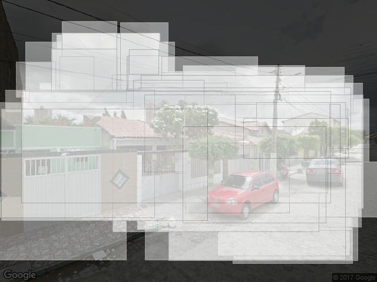
../percepcaoLocal/agradavel/melhores/intersects/R._Inácio_Marquês_da_Silva_54_22 -> 5.22581
../percepcaoLocal/agradavel/melhores/intersects/R._Inácio_Marquês_da_Silva_54_112 -> 5.056521
../percepcaoLocal/agradavel/melhores/intersects/R._Inácio_Marquês_da_Silva_54_203 -> 4.395569
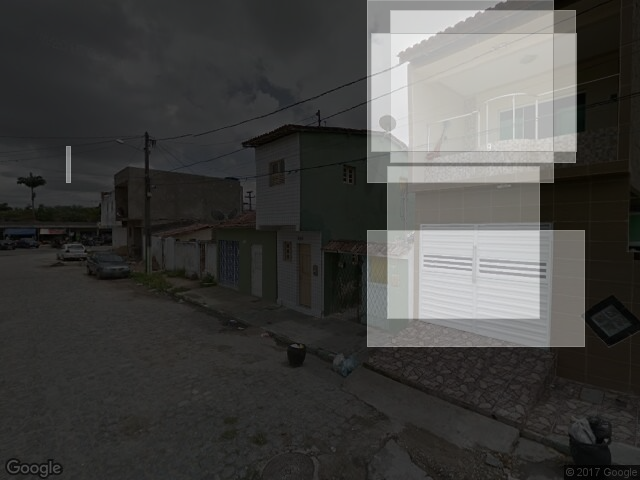
../percepcaoLocal/agradavel/melhores/intersects/R._Inácio_Marquês_da_Silva_54_293 -> 3.968053
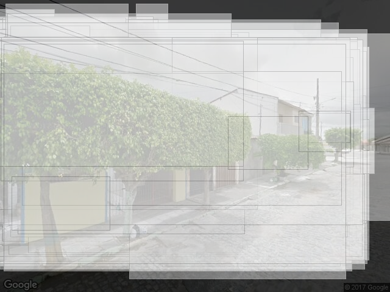
../percepcaoLocal/agradavel/melhores/intersects/R._Inácio_Marquês_da_Silva_120_22 -> 5.337336
../percepcaoLocal/agradavel/melhores/intersects/R._Inácio_Marquês_da_Silva_120_112 -> 5.18149
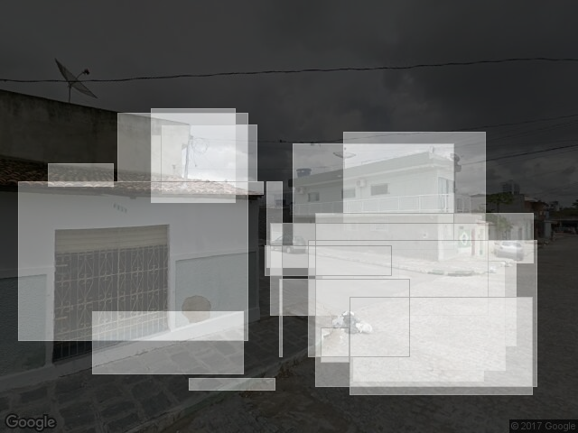
../percepcaoLocal/agradavel/melhores/intersects/R._Inácio_Marquês_da_Silva_120_203 -> 4.148817
../percepcaoLocal/agradavel/melhores/intersects/R._Inácio_Marquês_da_Silva_120_293 -> 5.39904
../percepcaoLocal/agradavel/melhores/intersects/R._Inácio_Marquês_da_Silva_239_22 -> 5.32549
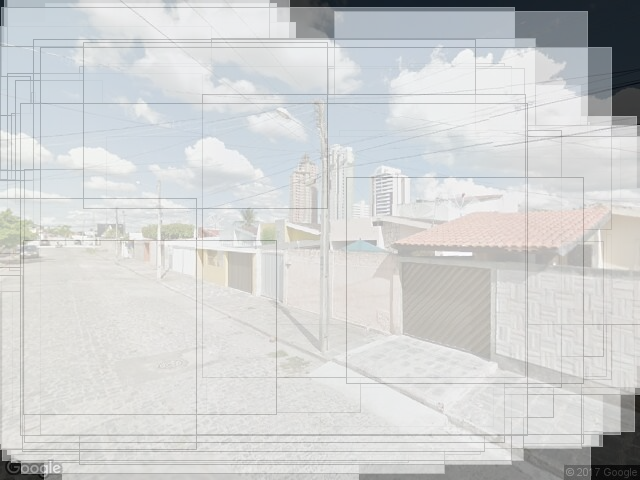
../percepcaoLocal/agradavel/melhores/intersects/R._Inácio_Marquês_da_Silva_239_90 -> 5.404294
../percepcaoLocal/agradavel/melhores/intersects/R._Inácio_Marquês_da_Silva_239_203 -> 5.155989
../percepcaoLocal/agradavel/melhores/intersects/R._Inácio_Marquês_da_Silva_239_270 -> 5.253824
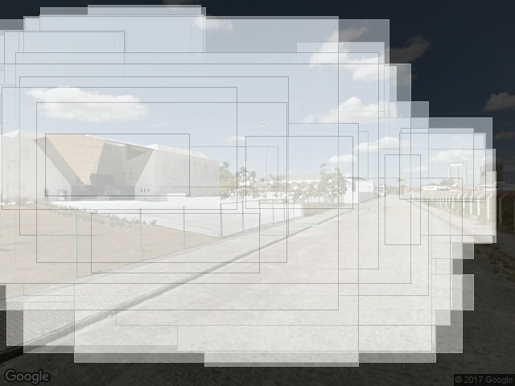
../percepcaoLocal/agradavel/melhores/intersects/R._Inácio_Marquês_da_Silva_360_22 -> 5.165576
../percepcaoLocal/agradavel/melhores/intersects/R._Inácio_Marquês_da_Silva_360_90 -> 4.50627
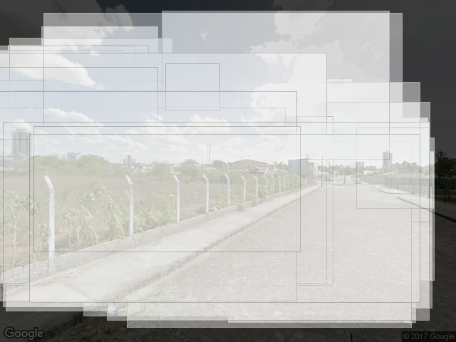
../percepcaoLocal/agradavel/melhores/intersects/R._Inácio_Marquês_da_Silva_360_203 -> 4.681429
../percepcaoLocal/agradavel/melhores/intersects/R._Inácio_Marquês_da_Silva_360_270 -> 5.105879
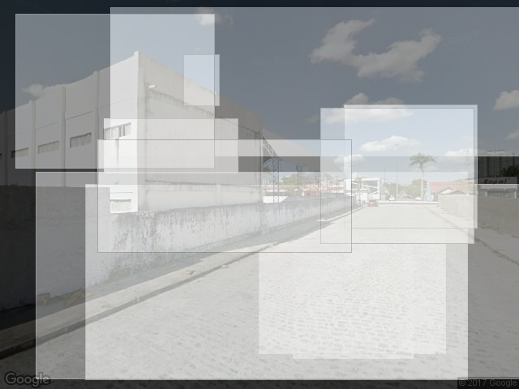
../percepcaoLocal/agradavel/melhores/intersects/R._Inácio_Marquês_da_Silva_500_22 -> 4.343081
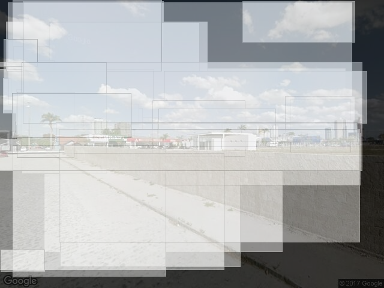
../percepcaoLocal/agradavel/melhores/intersects/R._Inácio_Marquês_da_Silva_500_90 -> 4.425882
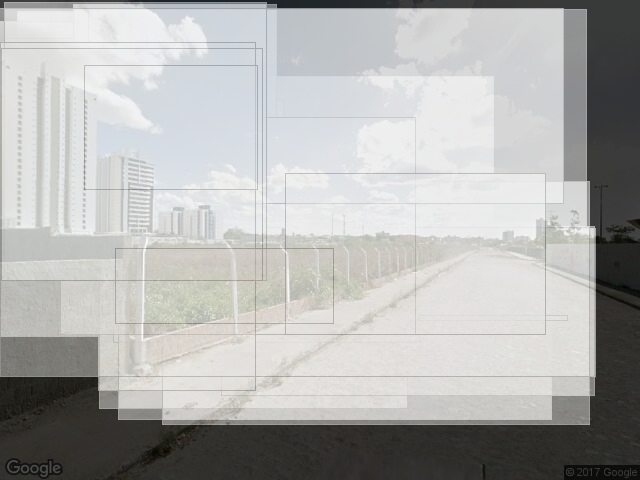
../percepcaoLocal/agradavel/melhores/intersects/R._Inácio_Marquês_da_Silva_500_203 -> 4.340677
../percepcaoLocal/agradavel/melhores/intersects/R._Inácio_Marquês_da_Silva_500_270 -> 4.425348
- Locais problemáticos na rua (olhando as fotos):
- 54 angulos 203 e 293 (falta de manutenção e verde);
- 120 angulo 203 (falta de manutenção e verde);
- 360 angulos 90 e 203 (terreno);
- todo o número 500
- Melhor e pior local da rua:
- 239 p1 side1
- 54 p2 side2. Diferenca de 1.45 -> boa manutenção, algum verde x menor manutenção, lixo
- Melhor e pior área da rua (considerando os dois lados):
- 239 a 360 (melhor)? manutenção, verde, museu, apesar de duas visões de terreno que tiveram notas não tão ruins
- Áreas muito diferentes entre lados:
- 120 a 239 -> no 239 temos um maior equilíbrio bom entre todos os pontos (boa manutenção, verde), mas no 120 temos um ponto pior para o side1 (menor manutenção, lixo, ausência de verde)
- Descontinuidades no mesmo lado:
- 54 side1, diferenca de 1.2 -> melhor manutenção x pior manutenção
- 54 side2, diferença de 0.6 -> melhor manutenção, verde x pior manutenção, falta de verde
- 120 side1, diferença de 1.1 -> melhor manutenção, verde x pior manutenção, falta de verde
- Heterogeneidade/Homogeneidade no ponto:
- os pontos mais heterogêneos foram o 54 (pior manutenção, falta de verde x melhor manutenção, verde) e 120 (pior manutenção, falta de verde x melhor manutenção);
- o mais homogêneo foi o 500 (pouca manutenção, muros, terrenos)
- Foram encontrados os problemas?
- Dos 4 pontos levantados o 360 não foi percebido pelas perguntas acima.
- Se olhássemos o terceiro ponto mais heterogêneo encontraríamos o problema do ponto 360 (menor diferença de 0.4) ou como os pontos de cada lado tem notas parecidas se olhássemos diferenças entre áreas após a diferença que foi discutida acima.
- O que é a rua?
- Rua de mediana para boa, com variações de locais melhores e piores ao longo de toda a rua, alguns números com grande variação no local, sem uma distinição clara de melhor área ou lado da rua. O final da rua parece ter uma maior homogeneidade negativa.
Floriano peixoto
## [1] ">>> GINI da rua: 0.0380414099374088"## [1] "Número 445 0.0324016617918168"
## [1] "Número 549 0.0366599777162926"
## [1] "Número 691 0.0124170056115485"
## [1] "Número 813 0.0145295659569444"
## [1] "Número 913 0.0407823104028531"## Adding missing grouping variables: `num`
| xlabel | side | V3 | street | num | angle |
|---|---|---|---|---|---|
| 445 - p1 | Side 1 | 5.402592 | Av._Mal._Floriano_Peixoto | 446 | 22 |
| 445 - p2 | Side 1 | 4.706462 | Av._Mal._Floriano_Peixoto | 448 | 293 |
| 549 - p1 | Side 1 | 4.937479 | Av._Mal._Floriano_Peixoto | 550 | 22 |
| 549 - p2 | Side 1 | 4.720322 | Av._Mal._Floriano_Peixoto | 552 | 293 |
| 691 - p1 | Side 1 | 5.522711 | Av._Mal._Floriano_Peixoto | 692 | 22 |
| 691 - p2 | Side 1 | 5.299257 | Av._Mal._Floriano_Peixoto | 694 | 293 |
| 813 - p1 | Side 1 | 4.855551 | Av._Mal._Floriano_Peixoto | 814 | 22 |
| 813 - p2 | Side 1 | 5.047525 | Av._Mal._Floriano_Peixoto | 816 | 293 |
| 913 - p1 | Side 1 | 4.464216 | Av._Mal._Floriano_Peixoto | 914 | 22 |
| 913 - p2 | Side 1 | 4.246906 | Av._Mal._Floriano_Peixoto | 916 | 293 |
| 445 - p1 | Side 2 | 5.400026 | Av._Mal._Floriano_Peixoto | 445 | 112 |
| 445 - p2 | Side 2 | 4.849774 | Av._Mal._Floriano_Peixoto | 447 | 203 |
| 549 - p1 | Side 2 | 5.241308 | Av._Mal._Floriano_Peixoto | 549 | 112 |
| 549 - p2 | Side 2 | 5.622123 | Av._Mal._Floriano_Peixoto | 551 | 203 |
| 691 - p1 | Side 2 | 5.320523 | Av._Mal._Floriano_Peixoto | 691 | 112 |
| 691 - p2 | Side 2 | 5.176836 | Av._Mal._Floriano_Peixoto | 693 | 203 |
| 813 - p1 | Side 2 | 5.187819 | Av._Mal._Floriano_Peixoto | 813 | 112 |
| 813 - p2 | Side 2 | 4.883455 | Av._Mal._Floriano_Peixoto | 815 | 203 |
| 913 - p1 | Side 2 | 5.020493 | Av._Mal._Floriano_Peixoto | 913 | 112 |
| 913 - p2 | Side 2 | 5.084640 | Av._Mal._Floriano_Peixoto | 915 | 203 |
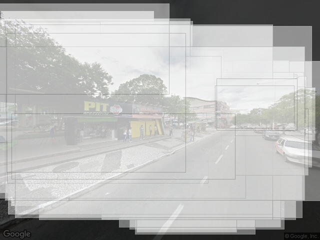
../percepcaoLocal/agradavel/melhores/intersects/Av._Mal._Floriano_Peixoto_445_22 -> 5.402592
../percepcaoLocal/agradavel/melhores/intersects/Av._Mal._Floriano_Peixoto_480_112 -> 5.400026
../percepcaoLocal/agradavel/melhores/intersects/Av._Mal._Floriano_Peixoto_480_203 -> 4.849774
../percepcaoLocal/agradavel/melhores/intersects/Av._Mal._Floriano_Peixoto_445_293 -> 4.706462
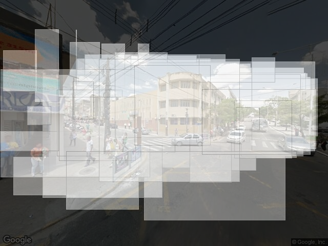
../percepcaoLocal/agradavel/melhores/intersects/Av._Mal._Floriano_Peixoto_549_22 -> 4.937479
../percepcaoLocal/agradavel/melhores/intersects/Av._Mal._Floriano_Peixoto_580_112 -> 5.241308
../percepcaoLocal/agradavel/melhores/intersects/Av._Mal._Floriano_Peixoto_580_203 -> 5.622123
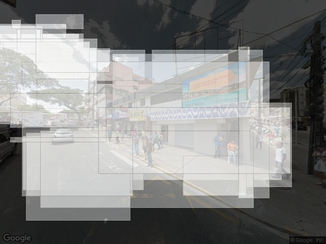
../percepcaoLocal/agradavel/melhores/intersects/Av._Mal._Floriano_Peixoto_549_293 -> 4.720323
../percepcaoLocal/agradavel/melhores/intersects/Av._Mal._Floriano_Peixoto_691_22 -> 5.522711
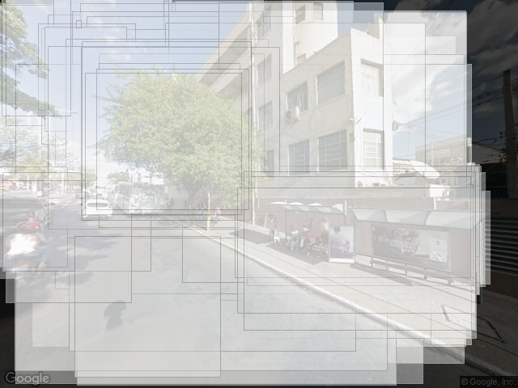
../percepcaoLocal/agradavel/melhores/intersects/Av._Mal._Floriano_Peixoto_660_112 -> 5.320523
../percepcaoLocal/agradavel/melhores/intersects/Av._Mal._Floriano_Peixoto_660_203 -> 5.176836
../percepcaoLocal/agradavel/melhores/intersects/Av._Mal._Floriano_Peixoto_691_293 -> 5.299257
../percepcaoLocal/agradavel/melhores/intersects/Av._Mal._Floriano_Peixoto_813_22 -> 4.855551
../percepcaoLocal/agradavel/melhores/intersects/Av._Mal._Floriano_Peixoto_826_112 -> 5.187819
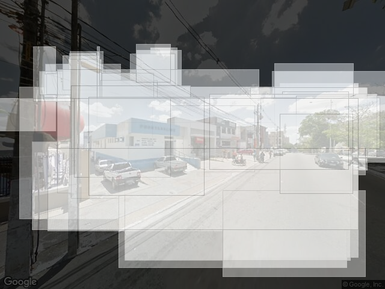
../percepcaoLocal/agradavel/melhores/intersects/Av._Mal._Floriano_Peixoto_826_203 -> 4.883455
../percepcaoLocal/agradavel/melhores/intersects/Av._Mal._Floriano_Peixoto_813_293 -> 5.047525
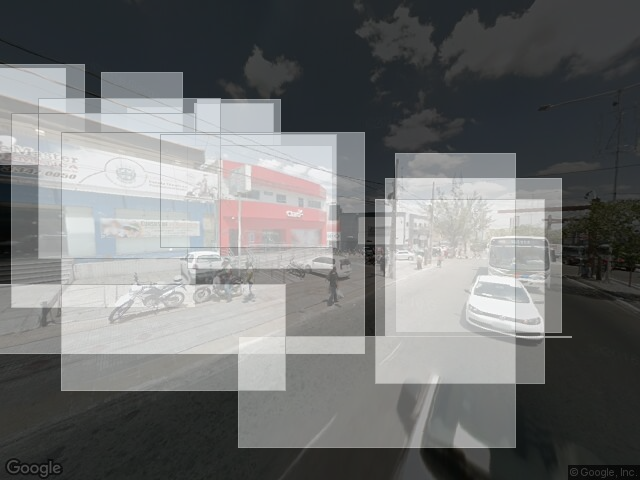
../percepcaoLocal/agradavel/melhores/intersects/Av._Mal._Floriano_Peixoto_913_22 -> 4.464216
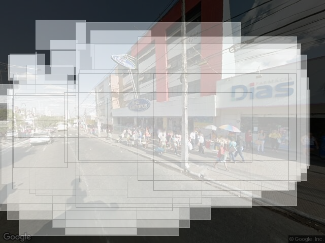
../percepcaoLocal/agradavel/melhores/intersects/Av._Mal._Floriano_Peixoto_912_112 -> 5.020493
../percepcaoLocal/agradavel/melhores/intersects/Av._Mal._Floriano_Peixoto_912_203 -> 5.084641
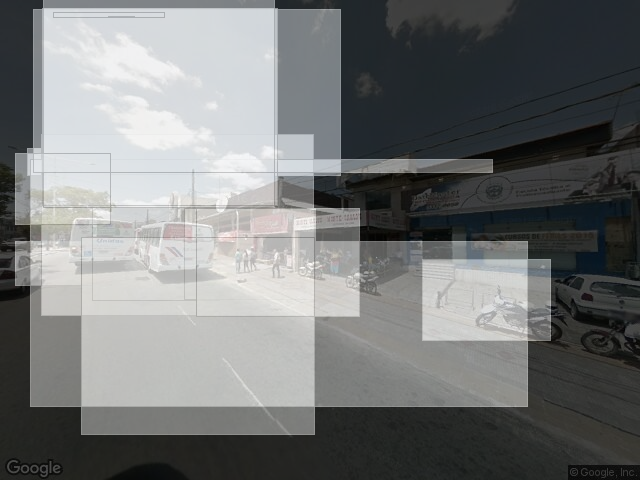
../percepcaoLocal/agradavel/melhores/intersects/Av._Mal._Floriano_Peixoto_913_293 -> 4.246906
- Locais problemáticos na rua (olhando as fotos):
- 813 angulos 22 (manutenção);
- 913 angulo 293 (identidade visual)
- Melhor e pior local da rua:
- 549 p2 side2 (muito verde bem mantido, praça)
- 913 p2 side1 (lojas com visual mais acanhado). Diferença de 1.4
- Melhor e pior área da rua (considerando os dois lados):
- 691 a 813? verde, bem mantido e alguns pontos precisando de manutenção.
- Áreas muito diferentes entre lados:
- 549 (praça x prédios mais acanhados)??
- Descontinuidades no mesmo lado:
- 445 side1, diferença de 0.7 -> ônibus??
- 445 side2, diferença de 0.6 -> mais verde x menos verde, prédio
- 549 side2, diferença de 0.4 -> mais verde, praça x menos verde, estacionamento
- Heterogeneidade/Homogeneidade no ponto:
- os pontos mais heterogêneos foram o 913 (visual das lojas?) e 549 (praça, verde x estacionamento, prédio).
- O mais homogênero foi o 691 (prédios até bem mantidos com algumas árvores)
- Foram encontrados os problemas?
- O ponto 813 dos dois apontados não foi percebido.
- Se olhássemos outras descontinuidades no mesmo lado acabaríamos chegando nessa comparação apesar da baixa diferença de 0.2.
- O que é a rua?
- Rua bem homogênea, de mediano para bom, com pequenas variações entre alguns de seus pontos.
Maciel Pinheiro
## [1] ">>> GINI da rua: 0.0327767504596409"## [1] "Número 130 0.0224107996078886"
## [1] "Número 190 0.0356993971485202"
## [1] "Número 248 0.0365423796145339"
## [1] "Número 284 0.0200410010210863"
## [1] "Número 360 0.0217660819750043"## Adding missing grouping variables: `num`
| xlabel | side | V3 | street | num | angle |
|---|---|---|---|---|---|
| 130 - p1 | Side 1 | 5.167156 | R._Maciel_Pinheiro | 130 | 90 |
| 130 - p2 | Side 1 | 4.670898 | R._Maciel_Pinheiro | 132 | 360 |
| 190 - p1 | Side 1 | 5.056711 | R._Maciel_Pinheiro | 190 | 90 |
| 190 - p2 | Side 1 | 5.140332 | R._Maciel_Pinheiro | 192 | 360 |
| 248 - p1 | Side 1 | 5.143290 | R._Maciel_Pinheiro | 248 | 90 |
| 248 - p2 | Side 1 | 4.413008 | R._Maciel_Pinheiro | 250 | 360 |
| 284 - p1 | Side 1 | 4.841157 | R._Maciel_Pinheiro | 284 | 90 |
| 284 - p2 | Side 1 | 4.925018 | R._Maciel_Pinheiro | 286 | 360 |
| 360 - p1 | Side 1 | 4.695433 | R._Maciel_Pinheiro | 360 | 90 |
| 360 - p2 | Side 1 | 5.001745 | R._Maciel_Pinheiro | 362 | 360 |
| 130 - p1 | Side 2 | 5.024561 | R._Maciel_Pinheiro | 131 | 180 |
| 130 - p2 | Side 2 | 4.754770 | R._Maciel_Pinheiro | 133 | 270 |
| 190 - p1 | Side 2 | 4.234283 | R._Maciel_Pinheiro | 191 | 180 |
| 190 - p2 | Side 2 | 5.132187 | R._Maciel_Pinheiro | 193 | 270 |
| 248 - p1 | Side 2 | 5.232310 | R._Maciel_Pinheiro | 249 | 180 |
| 248 - p2 | Side 2 | 4.745852 | R._Maciel_Pinheiro | 251 | 270 |
| 284 - p1 | Side 2 | 5.017710 | R._Maciel_Pinheiro | 285 | 180 |
| 284 - p2 | Side 2 | 4.529582 | R._Maciel_Pinheiro | 287 | 270 |
| 360 - p1 | Side 2 | 4.583014 | R._Maciel_Pinheiro | 361 | 180 |
| 360 - p2 | Side 2 | 4.494353 | R._Maciel_Pinheiro | 363 | 270 |
../percepcaoLocal/agradavel/melhores/intersects/R._Maciel_Pinheiro_130_90 -> 5.167156
../percepcaoLocal/agradavel/melhores/intersects/R._Maciel_Pinheiro_130_180 -> 5.024561
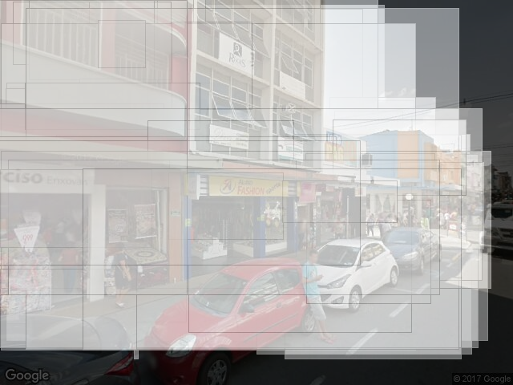
../percepcaoLocal/agradavel/melhores/intersects/R._Maciel_Pinheiro_130_270 -> 4.75477
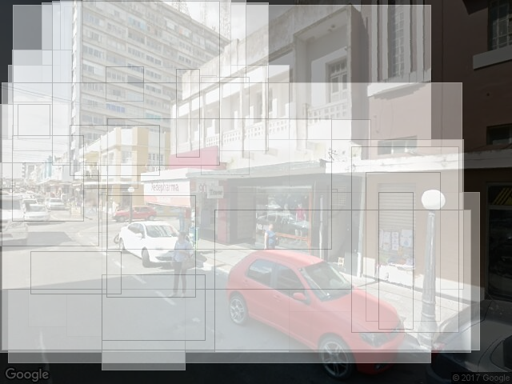
../percepcaoLocal/agradavel/melhores/intersects/R._Maciel_Pinheiro_130_360 -> 4.670898
../percepcaoLocal/agradavel/melhores/intersects/R._Maciel_Pinheiro_190_90 -> 5.056711
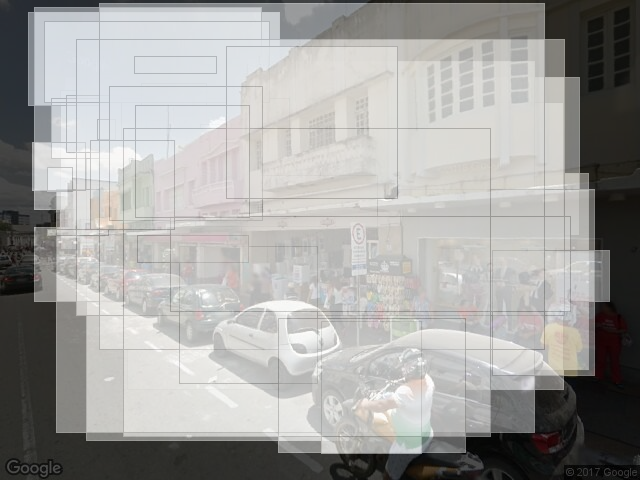
../percepcaoLocal/agradavel/melhores/intersects/R._Maciel_Pinheiro_190_180 -> 4.234283
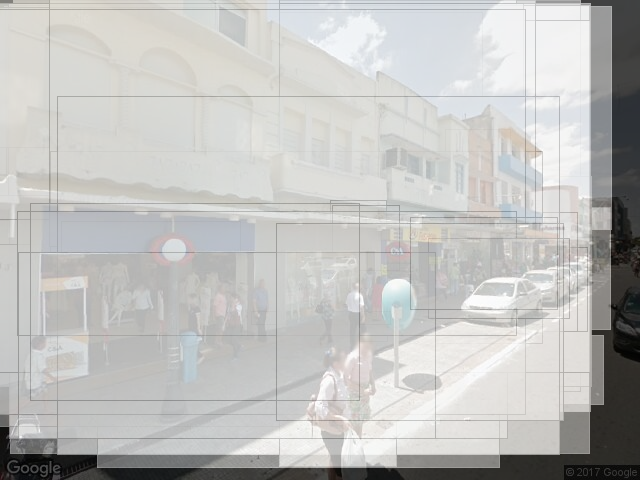
../percepcaoLocal/agradavel/melhores/intersects/R._Maciel_Pinheiro_190_270 -> 5.132187
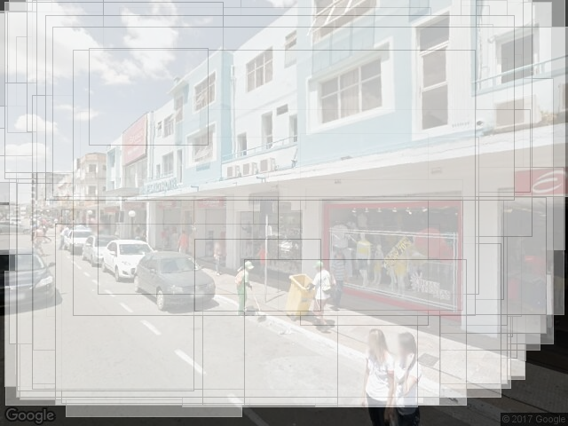
../percepcaoLocal/agradavel/melhores/intersects/R._Maciel_Pinheiro_190_360 -> 5.140332
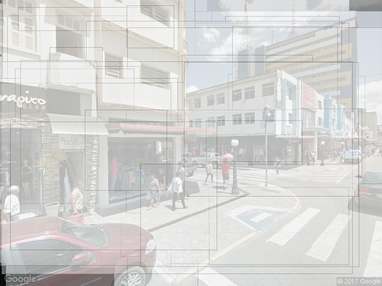
../percepcaoLocal/agradavel/melhores/intersects/R._Maciel_Pinheiro_248_90 -> 5.14329
../percepcaoLocal/agradavel/melhores/intersects/R._Maciel_Pinheiro_248_180 -> 5.23231
../percepcaoLocal/agradavel/melhores/intersects/R._Maciel_Pinheiro_248_270 -> 4.745852
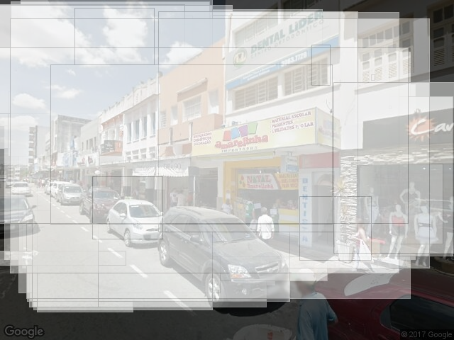
../percepcaoLocal/agradavel/melhores/intersects/R._Maciel_Pinheiro_248_360 -> 4.413008
../percepcaoLocal/agradavel/melhores/intersects/R._Maciel_Pinheiro_284_90 -> 4.841157
../percepcaoLocal/agradavel/melhores/intersects/R._Maciel_Pinheiro_284_180 -> 5.01771
../percepcaoLocal/agradavel/melhores/intersects/R._Maciel_Pinheiro_284_270 -> 4.529582
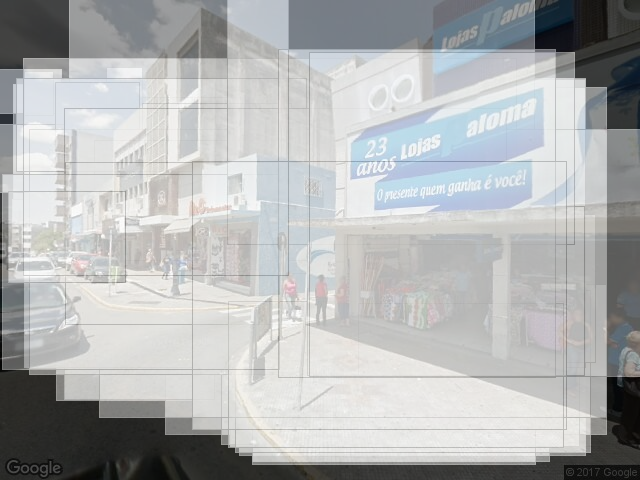
../percepcaoLocal/agradavel/melhores/intersects/R._Maciel_Pinheiro_284_360 -> 4.925018
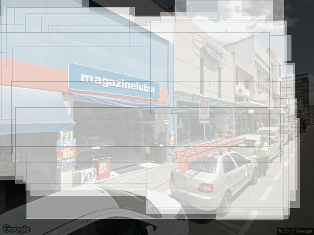
../percepcaoLocal/agradavel/melhores/intersects/R._Maciel_Pinheiro_360_90 -> 4.695433
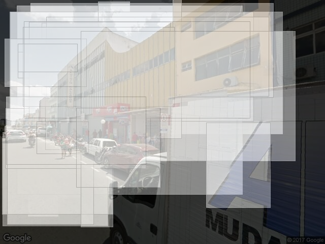
../percepcaoLocal/agradavel/melhores/intersects/R._Maciel_Pinheiro_360_180 -> 4.583014
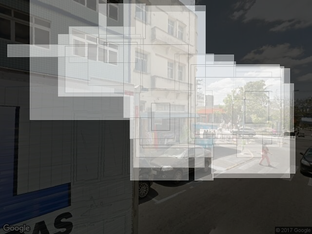
../percepcaoLocal/agradavel/melhores/intersects/R._Maciel_Pinheiro_360_270 -> 4.494353
../percepcaoLocal/agradavel/melhores/intersects/R._Maciel_Pinheiro_360_360 -> 5.001745
- Locais problemáticos na rua (olhando as fotos):
- 130 angulo 360 (manutenção de prédio);
- 190 angulo 180 (manutenção de prédio);
- 284 360 (manutenção de prédio);
- 360 270 (manutenção de prédio).
- Não existem árvores na rua.
- Melhor e pior local da rua:
- 248 angulo 180 (boa manutenção)
- 190 180 (manutenção de prédio faltando)
- Melhor e pior área da rua (considerando os dois lados):
- confuso!
- Áreas muito diferentes entre lados:
- 284 a 360, com side1 ligeiramente melhor (no side2 temos um estacionamento e um caminhão na vista)
- Descontinuidades no mesmo lado:
- 190 side2, diferença de 0.9 -> prédio precisando de manutenção x boa manutenção
- 248 side1, diferença de 0.7 -> menos identificadores, prédios um pouco mais novos x identificadores e prédios um pouco mais antigos
- 248 side2, diferença de 0.5 -> menos identificadores, prédios um pouco mais novos x identificadores e prédios um pouco mais antigos
- 284 side2, diferença de 0.5 -> boa manutenção x estacionamento, prédio, carros
- Heterogeneidade/Homogeneidade no ponto:
- Os pontos mais heterogêneos foram o 248 (boa manutenção x mais identificadores/prédios) e 190 (boa manutenção x prédio que precisa de manutenção).
- O mais homogêneo foi o 284 (boa manutenção, apesar do estacionamento e prédio precisando de manutenção)
- Foram encontrados os problemas?
- Apenas o 190 dos 4 pontos foi encontrado. A valorização da presença de árvores no final da rua pareceu não fazer um efeito tão alto em relação ao restante da rua.
- O 130 seria encontrado se continuássemos a olhar descontinuidades por lado. O 360 270 seria verificado se comparássemos a mesma visão dos dois lados da rua (e.g., olhando para a praça).
- O que é a rua?
- Rua homogênea, de mediana pra boa. Alguns pontos de variação podem ser percebidos relacionados a manutenção e identificadores.
Manoel Pereira
## [1] ">>> GINI da rua: 0.0292035753018673"## [1] "Número 188 0.0291357295718799"
## [1] "Número 222 0.026588597922482"
## [1] "Número 300 0.0244804553312614"
## [1] "Número 370 0.0321046250844108"
## [1] "Número 392 0.018781510249541"## Adding missing grouping variables: `num`
| xlabel | side | V3 | street | num | angle |
|---|---|---|---|---|---|
| 188 - p1 | Side 1 | 3.638034 | R._Manoel_Pereira_de_Araújo | 188 | 135 |
| 188 - p2 | Side 1 | 3.839520 | R._Manoel_Pereira_de_Araújo | 190 | 22 |
| 222 - p1 | Side 1 | 3.676951 | R._Manoel_Pereira_de_Araújo | 222 | 135 |
| 222 - p2 | Side 1 | 3.497591 | R._Manoel_Pereira_de_Araújo | 224 | 22 |
| 300 - p1 | Side 1 | 3.305779 | R._Manoel_Pereira_de_Araújo | 300 | 135 |
| 300 - p2 | Side 1 | 3.614717 | R._Manoel_Pereira_de_Araújo | 302 | 22 |
| 370 - p1 | Side 1 | 3.978157 | R._Manoel_Pereira_de_Araújo | 370 | 135 |
| 370 - p2 | Side 1 | 3.367666 | R._Manoel_Pereira_de_Araújo | 372 | 22 |
| 392 - p1 | Side 1 | 3.873702 | R._Manoel_Pereira_de_Araújo | 392 | 293 |
| 392 - p2 | Side 1 | 3.677024 | R._Manoel_Pereira_de_Araújo | 394 | 22 |
| 188 - p1 | Side 2 | 3.283834 | R._Manoel_Pereira_de_Araújo | 189 | 203 |
| 188 - p2 | Side 2 | 3.628099 | R._Manoel_Pereira_de_Araújo | 191 | 315 |
| 222 - p1 | Side 2 | 3.992773 | R._Manoel_Pereira_de_Araújo | 223 | 203 |
| 222 - p2 | Side 2 | 3.592702 | R._Manoel_Pereira_de_Araújo | 225 | 315 |
| 300 - p1 | Side 2 | 3.746254 | R._Manoel_Pereira_de_Araújo | 301 | 203 |
| 300 - p2 | Side 2 | 3.700124 | R._Manoel_Pereira_de_Araújo | 303 | 315 |
| 370 - p1 | Side 2 | 3.676955 | R._Manoel_Pereira_de_Araújo | 371 | 203 |
| 370 - p2 | Side 2 | 3.627112 | R._Manoel_Pereira_de_Araújo | 373 | 315 |
| 392 - p1 | Side 2 | 3.862603 | R._Manoel_Pereira_de_Araújo | 393 | 112 |
| 392 - p2 | Side 2 | 3.560585 | R._Manoel_Pereira_de_Araújo | 395 | 225 |
../percepcaoLocal/agradavel/melhores/intersects/R._Manoel_Pereira_de_Araújo_188_22 -> 3.83952
../percepcaoLocal/agradavel/melhores/intersects/R._Manoel_Pereira_de_Araújo_188_135 -> 3.638034
../percepcaoLocal/agradavel/piores/intersects/R._Manoel_Pereira_de_Araújo_188_203 -> 3.283834
../percepcaoLocal/agradavel/melhores/intersects/R._Manoel_Pereira_de_Araújo_188_315 -> 3.628099
../percepcaoLocal/agradavel/melhores/intersects/R._Manoel_Pereira_de_Araújo_222_22 -> 3.497591
../percepcaoLocal/agradavel/melhores/intersects/R._Manoel_Pereira_de_Araújo_222_135 -> 3.676951
../percepcaoLocal/agradavel/melhores/intersects/R._Manoel_Pereira_de_Araújo_222_203 -> 3.992773
../percepcaoLocal/agradavel/melhores/intersects/R._Manoel_Pereira_de_Araújo_222_315 -> 3.592702
../percepcaoLocal/agradavel/melhores/intersects/R._Manoel_Pereira_de_Araújo_300_22 -> 3.614718
../percepcaoLocal/agradavel/melhores/intersects/R._Manoel_Pereira_de_Araújo_300_135 -> 3.305779
../percepcaoLocal/agradavel/melhores/intersects/R._Manoel_Pereira_de_Araújo_300_203 -> 3.746254
../percepcaoLocal/agradavel/melhores/intersects/R._Manoel_Pereira_de_Araújo_300_315 -> 3.700124
../percepcaoLocal/agradavel/piores/intersects/R._Manoel_Pereira_de_Araújo_370_22 -> 3.367666
../percepcaoLocal/agradavel/melhores/intersects/R._Manoel_Pereira_de_Araújo_370_135 -> 3.978157
../percepcaoLocal/agradavel/melhores/intersects/R._Manoel_Pereira_de_Araújo_370_203 -> 3.676955
../percepcaoLocal/agradavel/melhores/intersects/R._Manoel_Pereira_de_Araújo_370_315 -> 3.627112
../percepcaoLocal/agradavel/melhores/intersects/R._Manoel_Pereira_de_Araújo_392_22 -> 3.677024
../percepcaoLocal/agradavel/melhores/intersects/R._Manoel_Pereira_de_Araújo_392_112 -> 3.862603
../percepcaoLocal/agradavel/melhores/intersects/R._Manoel_Pereira_de_Araújo_392_225 -> 3.560585
../percepcaoLocal/agradavel/melhores/intersects/R._Manoel_Pereira_de_Araújo_392_293 -> 3.873702
- Locais problemáticos na rua (olhando as fotos):
- A rua em geral precisa de manutenção.
- Alguns pontos parecem ainda piores como o 222 angulo 22 (prédio acabado + itens na rua), 300 angulo 22 e 135 (barraca, itens na rua), 370 angulo 22, 203 e 315 (prédios acabados, barracas).
- Ausência de árvores de fato na rua.
- Melhor e pior local da rua:
- 222 p1 side2 (prédio mais conservado da sucata)
- 188 p1 side2 (prédio acabado, carros, itens na rua)
- Melhor e pior área da rua (considerando os dois lados):
- confuso!
- Áreas muito diferentes entre lados:
- 300 a 370 (um lado com alguns pontos melhor conservados, o outro lado com mais variação);
- 222 a 300 (um lado com alguns pontos melhor conservados, o outro lado com mais variação)
- Descontinuidades no mesmo lado:
- 188 side2, diferença de 0.4 -> manutenção um pouco melhor
- 222 side2, diferença de 0.4 -> manutenção de prédios e mais itens na rua na imagem menos preferida
- 370 side1, diferença de 0.6 -> pequena variação de manutenção, menos itens na rua na imagem preferida
- Heterogeneidade/Homogeneidade no ponto:
- Os pontos mais heterogêneos foram o 370 (manutenção um pouco melhor em alguns locais e menos itens na rua) e o 188 (manutenção um pouco melhor em alguns locais).
- O ponto mais homogêneo foi o 392 (melhor manutenção em média dos prédios)
- Foram encontrados os problemas?
- Olhando as diferenças entre lados englobamos os números 222, 300 e 370.
- Olhando as maiores descontinuidades aparentes englobamos 222 e 370.
- Como a rua toda praticamente não tem árvores fica difícil pesar este aspecto dado a pobreza de manutenção, todavia a imagem 370 315 apesar de péssima manutenção e barracas/itens na rua teve uma nota melhor que outros locais e as árvores foram marcadas junto com o céu.
- O que é a rua?
- Rua homogênea de notas baixas, porém com alguns pontos que se destacam positivamente por ter uma melhor manutenção ou menos itens na rua e outros que se destacam negativamente por terem manutenção ainda pior e/ou mais itens na rua.